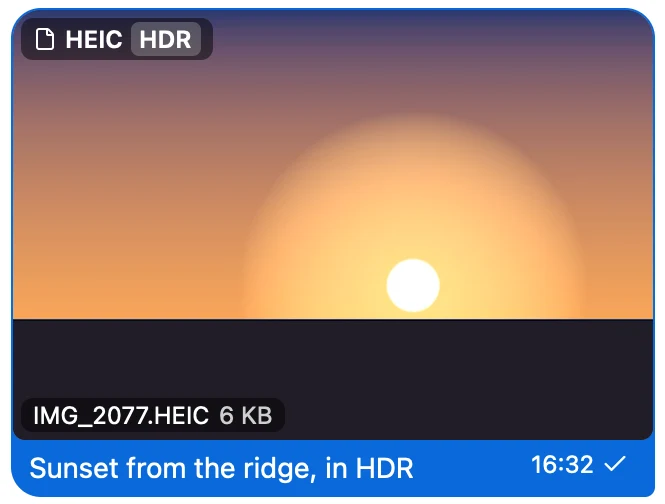
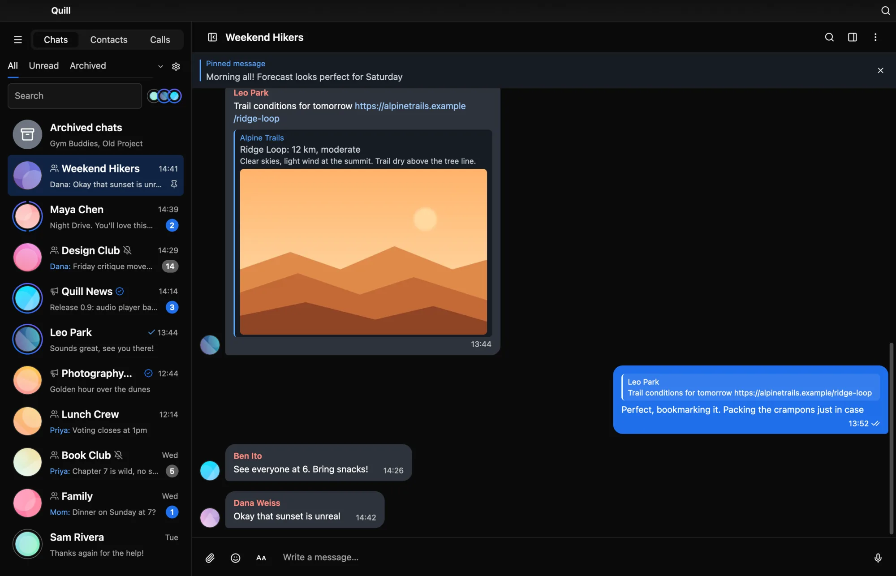

Messaging
Bold, italic, code, spoilers, quotes and links. Replies and quote-replies, forwarding, scheduled and silent messages, cloud drafts, reactions and polls.
Quill is written from scratch in Rust and draws its whole interface on the GPU. It runs on macOS, Windows and Linux and talks to Telegram through Telegram's own TDLib library, so your chats, contacts and account are the real thing. It's free and open source.
Unofficial. Not affiliated with Telegram.
Quill is early and still changing quickly. Use it at your own risk: it comes with no warranty, and the maintainers aren't responsible for lost data, account restrictions or bans, missed messages, or any other damage. Keep an official Telegram app installed alongside it.
Quill is young, and most of what you do in Telegram on a desktop already works on your real account.
Bold, italic, code, spoilers, quotes and links. Replies and quote-replies, forwarding, scheduled and silent messages, cloud drafts, reactions and polls.
Photos, videos, albums, GIFs and stickers. Voice and video messages recorded right in the app, with transcription. A fullscreen viewer, an audio player bar and a downloads list. HDR photos show in full brightness.
One-to-one audio and video calls with screen sharing, and group voice chats.
Admin tools, invite links, join requests, forum topics, comments, and channel statistics. Bots with keyboards, inline results and games.
Secret chats, a local passcode lock, active-session management and two-step verification. The app has no analytics: apart from Telegram, it only contacts GitHub to look for updates, and you can switch that off.
Light and dark themes with automatic night mode, accent colors, chat wallpapers, text size, and bubble or plain message layouts.
When someone sends a photo as a file, Quill shows its full dynamic range. Sunsets, lamps and reflections glow brighter than the white of the window, the way they do in the Photos app. The file carries an HDR tag in the chat and in the viewer.

Both apps ran on the same Mac, signed in to the same Telegram account, each with its own local cache.
| Measurement | Quill compared with Telegram Desktop |
|---|---|
| Memory a minute after launch | About a third as much |
| Memory after opening five chats | About 40% as much |
| Window on screen, warm launch | About 4× faster |
| Window on screen, cold launch | About 2× faster |
Apple M1 Pro, 16 GB, macOS 27.0.1. Memory is the physical footprint from footprint, which includes GPU memory, compared as the median of three runs per app, measured on 8 October 2026 against Telegram Desktop 7.2.9. Launch is the time until the window is on screen, measured on 18 October 2026 against Telegram Desktop 7.3.1; a cold launch empties the file cache first. We haven't measured Windows or Linux yet.
Captured from the real app window, signed in to a demo account.

Agent access lets an AI agent on your computer, such as Claude Code, Claude Desktop or Cursor, read and send your Telegram messages through the Quill that is already running. It's off until you turn it on in Settings → Advanced → Agent access.
claude mcp add quill -- /Applications/Quill.app/Contents/MacOS/quill mcp
That line adds Quill to Claude Code on a Mac. quill agent connect claude-desktop or cursor sets up the other apps on any system, quill agent install-skill installs the Quill skill for Claude Code, and scripts that don't speak MCP can call the same tools with quill agent status, quill agent read or quill agent send.
By default agents see Saved Messages, your bots and the channels you own. Anything else needs your grant, and Quill asks you when an agent wants more. A second switch lets an agent click and type in Quill's window, under the same grants.
Messages go out in your name and appear in an activity log in Quill. You can make each one wait for your click. Quill paces sends to stay inside Telegram's limits.
Quill never sends your data to an AI service itself, and it opens no network port. Read receipts, online status and typing are never hidden, there's no bulk export, and Telegram's terms don't allow training AI models on your chats.
The agent guide lists every tool, with recipes and errors.
Quill doesn't reimplement Telegram's protocol. Every request goes through TDLib, Telegram's own client library, Encryption, sync and the local message database are TDLib's job.
The interface is native Rust on GPUI, the GPU-accelerated UI framework from the Zed editor. There's no browser engine and no web view inside.
The source is on GitHub under the MIT license. Every third-party component and its license is listed in the repository and inside the app under Settings → Appearance → About Quill.
There's no release yet. The first builds will show up here, and on GitHub Releases, when they're ready. Until then you can build Quill from source.
Quill installs in Applications and opens straight away, without the “Apple could not verify” warning. Run the same command later to update.
curl -fsSL https://raw.githubusercontent.com/shinycake/quill/main/scripts/macos-install.sh | bash
Why there's no warning: macOS checks apps you download in a browser. Quill isn't checked by Apple yet, because that needs a paid Apple developer account, so the browser download below asks you to confirm it once. Files that Terminal downloads aren't marked for that check.
Get the app as a zip file. The first time you open it, macOS asks you to confirm it.
Download for macOS (zip)Unzip it and move Quill to Applications. Double-click the zip, then drag Quill into your Applications folder and open it.
macOS says Quill wasn't opened. Click Done. Don't click Move to Trash.
Open System Settings, then Privacy & Security. Scroll down to Security and click Open Anyway next to the Quill message.
Confirm. macOS asks once more. Click Open Anyway, and enter your password or use Touch ID if asked. Quill opens, and from then on it opens like any other app.
Comfortable with Terminal? Instead of steps 2 to 4 you can run xattr -dr com.apple.quarantine /Applications/Quill.app once.
Quill installs for your account and starts straight away, without the “Windows protected your PC” warning. Run the same command later to update.
irm https://raw.githubusercontent.com/shinycake/quill/main/scripts/windows-install.ps1 | iex
Why there's no warning: Windows SmartScreen checks programs you download in a browser. Quill isn't signed with a paid Microsoft certificate yet, so the zip below asks you to confirm it once. Files that PowerShell downloads aren't marked for that check. If Smart App Control is turned on (Windows 11), it may still block Quill, because it checks every app.
Get Quill as a zip file. The first time you start it, Windows asks you to confirm it.
Download for Windows (zip)Unzip it. Right-click the zip, choose Extract All, then open quill.exe in the new folder. Keep the files in that folder together.
Windows says it protected your PC. Click More info. Don't click Don't run.
Click Run anyway. The dialog now names the app. Click Run anyway. Quill starts, and from then on it starts like any other app.
No Visual C++ Redistributable or anything else is needed. Quill writes nothing outside your user profile.
Quill installs for your account, shows up in your applications menu and opens straight away. Run the same command later to update.
curl -fsSL https://raw.githubusercontent.com/shinycake/quill/main/scripts/linux-web-install.sh | bash
~/.local, and ~/.local/opt/quill/install.sh --uninstall removes it.Get Quill as a tarball. It runs from any folder, or installs under ~/.local.
tar -xzf quill-linux-*-bundle.tar.gzquill-linux-*/install.sh to add Quill to your applications menu, or start quill-linux-*/quill where it is.Quill needs a glibc-based distribution on x86_64 or 64-bit ARM (arm64), a Vulkan driver, and GTK 3, which every mainstream desktop has. On a minimal Debian or Ubuntu system, install them with sudo apt install libgtk-3-0 libxkbcommon-x11-0 libvulkan1 mesa-vulkan-drivers libfontconfig1 libasound2.
macOS 14 or later on Apple Silicon · Windows 10 or later (x64) · Linux x86_64 or arm64 with glibc. Builds aren't signed with a paid developer certificate yet, so a download from the browser asks you to confirm the first launch.
No. Quill is an independent project. It isn't affiliated with, endorsed by, or sponsored by Telegram. It uses the public Telegram API under Telegram's API Terms of Service, through Telegram's own TDLib library.
It's a separate app, written from scratch in Rust, with its interface drawn on the GPU by GPUI, the framework from the Zed editor. On our test Mac it used about a third of Telegram Desktop's memory and put its window on screen about four times faster on a warm launch. How we measured.
Quill follows Telegram's rules for third-party apps as closely as we can, but Telegram decides what it allows, and we can't promise anything. Quill is experimental: use it at your own risk.
Quill runs on your computer and stores its data there, encrypted with a key kept in your system's keychain (macOS), DPAPI (Windows) or a private file (Linux). It has no server of its own and the app collects no analytics. This website counts visits with GoatCounter, which sets no cookies and records no personal data.
Yes. Quill is free software under the MIT license. There's nothing to buy and no account other than your Telegram one.
Releases aren't signed with a paid Apple or Microsoft certificate yet. On macOS, install with the Terminal command and there's nothing to confirm, because macOS only checks apps downloaded in a browser. If you downloaded the zip, follow the steps to open it once. On Windows, install with the PowerShell command and SmartScreen has nothing to confirm, because it only checks programs downloaded in a browser (Smart App Control, if you turned it on, is a separate check). If you downloaded the zip, choose More info → Run anyway once. Each release lists SHA-256 checksums so you can verify the download.
Try it, and open an issue when something breaks or feels off. Pull requests are welcome too.